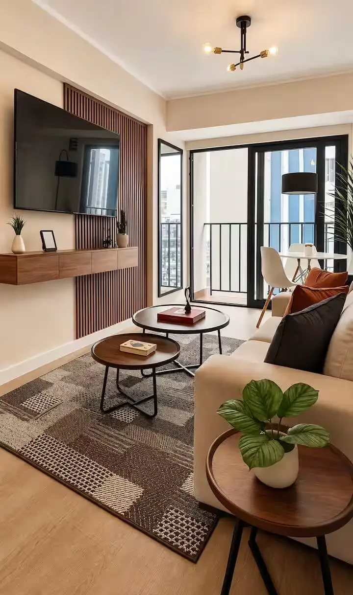
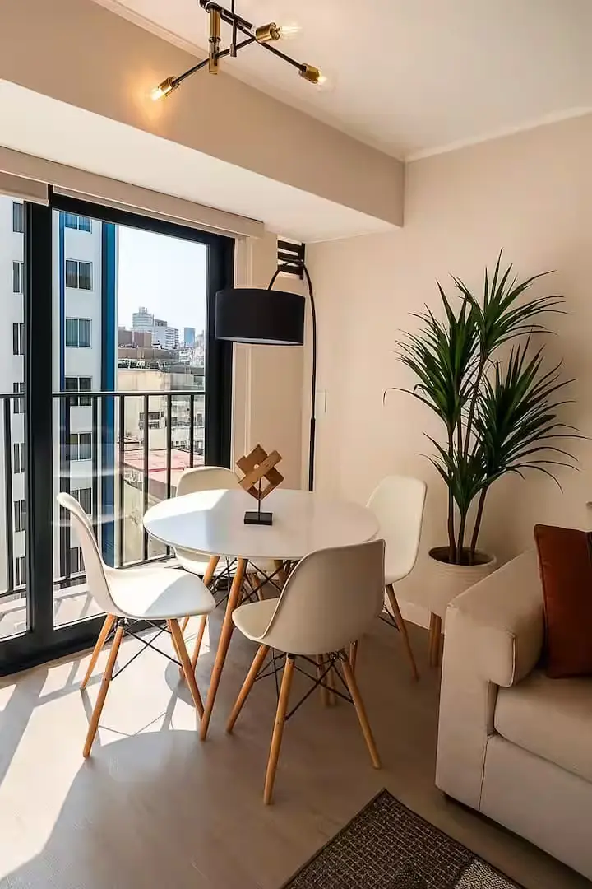
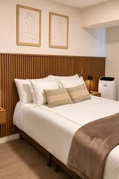
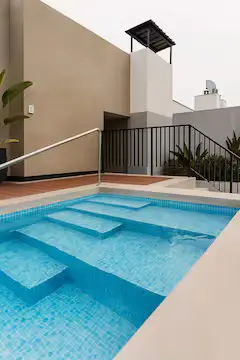
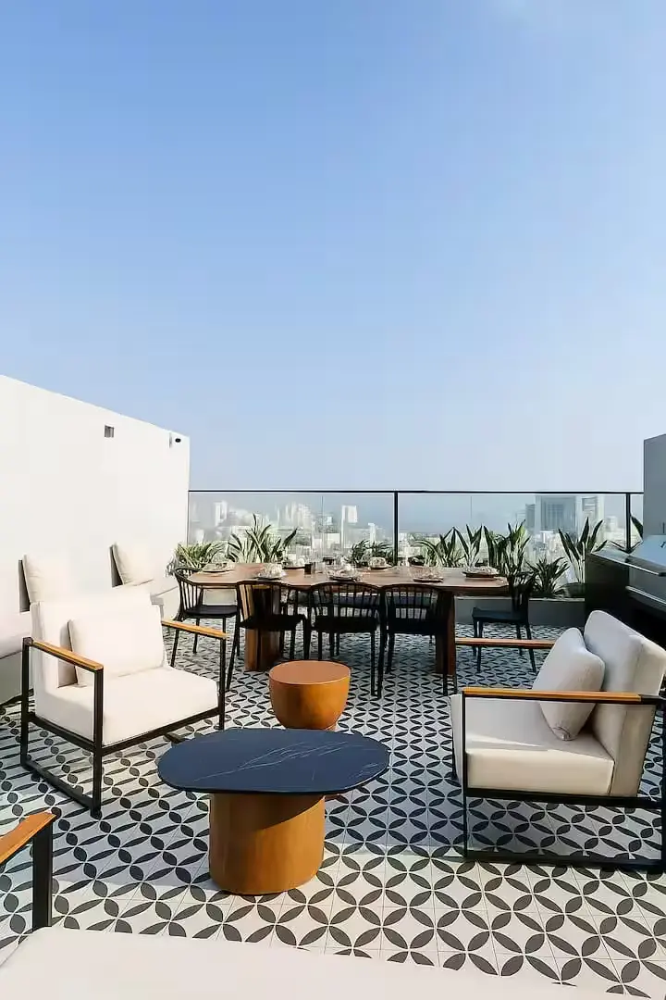

“Tal cual las fotos: ordenado, impecable y en una zona muy céntrica.”
Isabela · Huésped verificada en AirbnbApartamento completo
Una pausa cómoda cerca del mar.
Un apartamento elegante y acogedor con balcón, pensado tanto para descansar como para trabajar. La sala luminosa, la cocina equipada y el dormitorio independiente forman un espacio funcional y sereno.
Su ubicación en Miraflores permite disfrutar del malecón, Larcomar, parques y restaurantes. El edificio suma piscina, gimnasio y seguridad las 24 horas para una estancia fácil de principio a fin.




ComodidadesTodo lo necesario,
Todo lo necesario,
dentro y fuera del apartamento.
Wi‑Fi rápidoConexión para trabajo y ocio
Cocina equipadaNevera y utensilios
Balcón privadoUn rincón al aire libre
Aire acondicionadoEquipo portátil
PiscinaZona común del edificio
GimnasioEntrenamiento durante tu estancia
AscensorAcceso cómodo al apartamento
Llegada autónomaAcceso mediante teclado

La ubicación
Miraflores, a pasos de la costa.
Una base céntrica para vivir Lima a tu ritmo, cerca del malecón, Costa Verde, Larcomar, parques y una amplia oferta de restaurantes. El entorno combina paseos junto al mar con todo lo necesario para una estancia urbana.
Costa cercaRestaurantes cercaParques cerca
Consultar ubicación y fechas →5,0 · 5 evaluaciones verificadas
Una estancia impecable y bien conectada.
“Alojamiento de nivel premium y un anfitrión muy cordial.”
Enrique · Huésped verificado en Airbnb